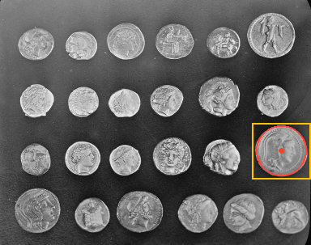

이 장에서 배우는 내용
프로브·피팅 결과를 분리하는 선/원/타원/사각형 측정.
ProbeSettings 의 count는 직선 최소 2·원 최소 3에서 4096 이하, search_length는 유한한 양의 픽셀 길이, profile_width는 양의 홀수, profile_samples는 2×derivative_radius+3 이상입니다. direction은 Forward/Reverse, selection은 First/Last/Strongest, min_found는 해당 모델 최소점 이상 count 이하입니다. caliper는 고급 프로파일·미분·극성·임계값·피크 선택 설정이고 fit은 직선/원용 FitOptions 입니다. ShapeProbeSettings 는 같은 프로브 필드를 가지지만 fit 필드가 없고 타원·사각형 모델 자체의 RobustFitOptions 를 사용합니다. default_measurement_probes() 는 직선·원 설정을 제공하며 형상 설정은 별도로 지정합니다.
미분 반경과 max_results는 1 이상, threshold/prominence는 유한한 0 이상, min_valid_width는 1 이상 profile_width 이하입니다. 필터는 비어 있지 않은 유한한 홀수 길이이며 합이 유한하고 절댓값이 기계 엡실론보다 커야 합니다. 프로브 작업량 count×profile_samples×(profile_width+filter 길이+2×반경)은 8,000,000 이하여야 합니다.
RobustFitOptions : loss는 LeastSquares/Huber/Tukey, scale은 잔차 가중의 양의 유한 척도, initial_threshold는 초기 피팅의 양의 유한 임계값, inlier_threshold는 최종 채택 판정의 양의 유한 임계값입니다. max_iterations는 1–1000, tolerance와 damping은 유한한 양수입니다. 점은 유한하고 최대 10,000개이며 점 수×(256+6×max_iterations) ≤ 4,000,000입니다. u=|잔차/scale|일 때 Huber 가중치는 u≤1에서 1, 그 밖에 1/u, Tukey는 u<1에서 (1−u²)², 그 밖에 0입니다. LeastSquares는 항상 1입니다.
소주제별 독립 문서
아래 목차는 각기 별도의 HTML 페이지입니다. 필요한 주제를 선택하면 그 주제의 전제, 구체적인 사용 방법과 결과를 이어서 읽을 수 있습니다.
실제 사진으로 확인하기



관련 API
| 언어 | 종류 | 공개 심볼 | 형식 | 설명 |
|---|---|---|---|---|
| C# | 생성자 | CaliperSpec..ctor | CaliperSpec(ZVision.ProfileSpec profile, ZVision.EdgePolarity polarity, System.Double threshold) | 계수를 저장하는 CaliperSpec 값을 만듭니다. 값의 유효성은 연산 시 검증합니다. |
| C# | 구조체 | CaliperSpec | | 프로파일과 원시 강도 기울기 기준의 에지 검출 설정입니다. |
| C# | 메서드 | CaliperSpec.Equals | System.Boolean Equals(System.Object obj) | 설명 미제공 |
| C# | 메서드 | CaliperSpec.Equals | static System.Boolean Equals(System.Object objA, System.Object objB) | 설명 미제공 |
| C# | 메서드 | CaliperSpec.GetHashCode | System.Int32 GetHashCode() | 설명 미제공 |
| C# | 메서드 | CaliperSpec.GetType | System.Type GetType() | 설명 미제공 |
| C# | 필드 | CaliperSpec.Polarity | readonly ZVision.EdgePolarity Polarity | 시작에서 끝 방향으로 적용할 극성입니다. |
| C# | 필드 | CaliperSpec.Profile | readonly ZVision.ProfileSpec Profile | 에지를 찾을 스트립 프로파일 설정입니다. |
| C# | 메서드 | CaliperSpec.ReferenceEquals | static System.Boolean ReferenceEquals(System.Object objA, System.Object objB) | 설명 미제공 |
| C# | 필드 | CaliperSpec.Threshold | readonly System.Double Threshold | 원시 강도/픽셀 단위의 유한한 비음수 임계치입니다. |
| C# | 메서드 | CaliperSpec.ToString | System.String ToString() | 설명 미제공 |
| C# | 생성자 | ProfileSpec..ctor | ProfileSpec(ZVision.Point2 start, ZVision.Point2 end, System.UInt64 samples, System.UInt64 width) | 계수를 저장하는 ProfileSpec 값을 만듭니다. 값의 유효성은 연산 시 검증합니다. |
| C# | 필드 | ProfileSpec.End | readonly ZVision.Point2 End | ROI 로컬 픽셀 좌표의 끝점입니다. |
| C# | 메서드 | ProfileSpec.Equals | System.Boolean Equals(System.Object obj) | 설명 미제공 |
| C# | 메서드 | ProfileSpec.Equals | static System.Boolean Equals(System.Object objA, System.Object objB) | 설명 미제공 |
| C# | 메서드 | ProfileSpec.GetHashCode | System.Int32 GetHashCode() | 설명 미제공 |
| C# | 메서드 | ProfileSpec.GetType | System.Type GetType() | 설명 미제공 |
| C# | 구조체 | ProfileSpec | | ROI 로컬 픽셀 중심 좌표의 스트립 표본 추출 설정입니다. Gray8, Gray16, GrayF32를 지원합니다. |
| C# | 메서드 | ProfileSpec.ReferenceEquals | static System.Boolean ReferenceEquals(System.Object objA, System.Object objB) | 설명 미제공 |
| C# | 필드 | ProfileSpec.Samples | readonly System.UInt64 Samples | 양 끝을 포함한 표본 개수이며 3 이상이어야 합니다. |
| C# | 필드 | ProfileSpec.Start | readonly ZVision.Point2 Start | ROI 로컬 픽셀 좌표의 시작점입니다. |
| C# | 메서드 | ProfileSpec.ToString | System.String ToString() | 설명 미제공 |
| C# | 필드 | ProfileSpec.Width | readonly System.UInt64 Width | 스트립의 수직 방향 표본 수이며 양의 홀수입니다. |
| Python | 클래스 | CaliperSpec | (profile: zvision._metrology.ProfileSpec, polarity: zvision._metrology.EdgePolarity, threshold: float) -> None | CaliperSpec(profile: zvision._metrology.ProfileSpec, polarity: zvision._metrology.EdgePolarity, threshold: float) |
| Python | 생성자 | CaliperSpec.__init__ | CaliperSpec(profile: zvision._metrology.ProfileSpec, polarity: zvision._metrology.EdgePolarity, threshold: float) -> None | CaliperSpec(profile: zvision._metrology.ProfileSpec, polarity: zvision._metrology.EdgePolarity, threshold: float) |
| Python | 필드 | CaliperSpec.polarity | CaliperSpec.polarity: EdgePolarity | 시작→끝 방향의 상승, 하강 또는 양쪽 극성. |
| Python | 필드 | CaliperSpec.profile | CaliperSpec.profile: zvision._metrology.ProfileSpec | 샘플링할 ProfileSpec. |
| Python | 필드 | CaliperSpec.threshold | CaliperSpec.threshold: float | 원시 강도/픽셀의 유한한 0 이상 기울기 한계. |
| Python | 클래스 | ProfileSpec | (start: zvision._regions.Point2, end: zvision._regions.Point2, samples: int, width: int) -> None | ProfileSpec(start: zvision._regions.Point2, end: zvision._regions.Point2, samples: int, width: int) |
| Python | 생성자 | ProfileSpec.__init__ | ProfileSpec(start: zvision._regions.Point2, end: zvision._regions.Point2, samples: int, width: int) -> None | ProfileSpec(start: zvision._regions.Point2, end: zvision._regions.Point2, samples: int, width: int) |
| Python | 필드 | ProfileSpec.end | ProfileSpec.end: zvision._regions.Point2 | ROI 로컬 픽셀 중심의 끝점; 시작점과 달라야 함. |
| Python | 필드 | ProfileSpec.samples | ProfileSpec.samples: int | 양 끝을 포함하는 표본 수; 3 이상. |
| Python | 필드 | ProfileSpec.start | ProfileSpec.start: zvision._regions.Point2 | ROI 로컬 픽셀 중심의 시작점. |
| Python | 필드 | ProfileSpec.width | ProfileSpec.width: int | 법선 방향 표본 수; 양의 홀수. |
| Rust | 상수 | CaliperSpec.ALIGN | const ALIGN: usize | The alignment of pointer. |
| Rust | 구조체 | CaliperSpec | pub struct CaliperSpec { pub profile: ProfileSpec, pub polarity: EdgePolarity, pub threshold: f64, } | 설명 미제공 |
| Rust | 연관 타입 | CaliperSpec.Error | type Error = <U as TryFrom<T>>::Error | The type returned in the event of a conversion error. |
| Rust | 연관 타입 | CaliperSpec.Error-1 | type Error = Infallible | The type returned in the event of a conversion error. |
| Rust | 연관 타입 | CaliperSpec.Init | type Init = T | The type for initializers. |
| Rust | 연관 타입 | CaliperSpec.Owned | type Owned = T | The resulting type after obtaining ownership. |
| Rust | 메서드 | CaliperSpec.borrow | fn borrow(&self) -> &T | Immutably borrows from an owned value. Read more |
| Rust | 메서드 | CaliperSpec.borrow_mut | fn borrow_mut(&mut self) -> &mut T | Mutably borrows from an owned value. Read more |
| Rust | 메서드 | CaliperSpec.clone | fn clone(&self) -> CaliperSpec | Returns a copy of the value. Read more |
| Rust | 메서드 | CaliperSpec.clone_from | fn clone_from(&mut self, source: &Self) | Performs copy-assignment from source. Read more |
| Rust | 메서드 | CaliperSpec.clone_into | fn clone_into(&self, target: &mut T) | Uses borrowed data to replace owned data, usually by cloning. Read more |
| Rust | 메서드 | CaliperSpec.clone_to_uninit | unsafe fn clone_to_uninit(&self, dst: *mut u8) | Performs copy-assignment from self to dst. Read more |
| Rust | 메서드 | CaliperSpec.deref | unsafe fn deref<'a>(ptr: usize) -> &'a T | Dereferences the given pointer. Read more |
| Rust | 메서드 | CaliperSpec.deref_mut | unsafe fn deref_mut<'a>(ptr: usize) -> &'a mut T | Mutably dereferences the given pointer. Read more |
| Rust | 메서드 | CaliperSpec.drop | unsafe fn drop(ptr: usize) | Drops the object pointed to by the given pointer. Read more |
| Rust | 메서드 | CaliperSpec.eq | fn eq(&self, other: &CaliperSpec) -> bool | Tests for self and other values to be equal, and is used by ==. |
| Rust | 메서드 | CaliperSpec.fmt | fn fmt(&self, f: &mut Formatter<'_>) -> Result<(), Error> | Formats the value using the given formatter. Read more |
| Rust | 메서드 | CaliperSpec.from | fn from(t: T) -> T | Returns the argument unchanged. |
| Rust | 메서드 | CaliperSpec.init | unsafe fn init(init: <T as Pointable>::Init) -> usize | Initializes a with the given initializer. Read more |
| Rust | 메서드 | CaliperSpec.into | fn into(self) -> U | Calls U::from(self). That is, this conversion is whatever the implementation of From<T> for U chooses to do. |
| Rust | 메서드 | CaliperSpec.into_either | fn into_either(self, into_left: bool) -> Either<Self, Self> | Converts self into a Left variant of Either<Self, Self> if into_left is true. Converts self into a Right variant of Either<Self, Self> otherwise. Read more |
| Rust | 메서드 | CaliperSpec.into_either_with | fn into_either_with<F>(self, into_left: F) -> Either<Self, Self>where F: FnOnce(&Self) -> bool, | Converts self into a Left variant of Either<Self, Self> if into_left(&self) returns true. Converts self into a Right variant of Either<Self, Self> otherwise. Read more |
| Rust | 메서드 | CaliperSpec.ne | fn ne(&self, other: &Rhs) -> bool | Tests for !=. The default implementation is almost always sufficient, and should not be overridden without very good reason. |
| Rust | 필드 | CaliperSpec.polarity | polarity: EdgePolarity | 설명 미제공 |
| Rust | 필드 | CaliperSpec.profile | profile: ProfileSpec | 설명 미제공 |
| Rust | 필드 | CaliperSpec.threshold | threshold: f64 | 설명 미제공 |
| Rust | 메서드 | CaliperSpec.to_owned | fn to_owned(&self) -> T | Creates owned data from borrowed data, usually by cloning. Read more |
| Rust | 메서드 | CaliperSpec.try_from | fn try_from(value: U) -> Result<T, <T as TryFrom<U>>::Error> | Performs the conversion. |
| Rust | 메서드 | CaliperSpec.try_into | fn try_into(self) -> Result<U, <U as TryFrom<T>>::Error> | Performs the conversion. |
| Rust | 메서드 | CaliperSpec.type_id | fn type_id(&self) -> TypeId | Gets the TypeId of self. Read more |
| Rust | 상수 | ProbeSettings.ALIGN | const ALIGN: usize | The alignment of pointer. |
| Rust | 연관 타입 | ProbeSettings.Error | type Error = <U as TryFrom<T>>::Error | The type returned in the event of a conversion error. |
| Rust | 연관 타입 | ProbeSettings.Error-1 | type Error = Infallible | The type returned in the event of a conversion error. |
| Rust | 연관 타입 | ProbeSettings.Init | type Init = T | The type for initializers. |
| Rust | 연관 타입 | ProbeSettings.Owned | type Owned = T | The resulting type after obtaining ownership. |
| Rust | 구조체 | ProbeSettings | pub struct ProbeSettings { pub count: usize, pub search_length: f64, pub profile_width: usize, pub profile_samples: usize, pub direction: ProbeDirection, pub caliper: AdvancedCaliperOptions, pub selection: ProbeSelection, pub min_found: usize, pub fit: FitOptions, } | 설명 미제공 |
| Rust | 메서드 | ProbeSettings.borrow | fn borrow(&self) -> &T | Immutably borrows from an owned value. Read more |
| Rust | 메서드 | ProbeSettings.borrow_mut | fn borrow_mut(&mut self) -> &mut T | Mutably borrows from an owned value. Read more |
| Rust | 필드 | ProbeSettings.caliper | caliper: AdvancedCaliperOptions | 설명 미제공 |
| Rust | 메서드 | ProbeSettings.clone | fn clone(&self) -> ProbeSettings | Returns a copy of the value. Read more |
| Rust | 메서드 | ProbeSettings.clone_from | fn clone_from(&mut self, source: &Self) | Performs copy-assignment from source. Read more |
| Rust | 메서드 | ProbeSettings.clone_into | fn clone_into(&self, target: &mut T) | Uses borrowed data to replace owned data, usually by cloning. Read more |
| Rust | 메서드 | ProbeSettings.clone_to_uninit | unsafe fn clone_to_uninit(&self, dst: *mut u8) | Performs copy-assignment from self to dst. Read more |
| Rust | 필드 | ProbeSettings.count | count: usize | 설명 미제공 |
| Rust | 메서드 | ProbeSettings.deref | unsafe fn deref<'a>(ptr: usize) -> &'a T | Dereferences the given pointer. Read more |
| Rust | 메서드 | ProbeSettings.deref_mut | unsafe fn deref_mut<'a>(ptr: usize) -> &'a mut T | Mutably dereferences the given pointer. Read more |
| Rust | 필드 | ProbeSettings.direction | direction: ProbeDirection | 설명 미제공 |
| Rust | 메서드 | ProbeSettings.drop | unsafe fn drop(ptr: usize) | Drops the object pointed to by the given pointer. Read more |
| Rust | 필드 | ProbeSettings.fit | fit: FitOptions | 설명 미제공 |
| Rust | 메서드 | ProbeSettings.fmt | fn fmt(&self, f: &mut Formatter<'_>) -> Result<(), Error> | Formats the value using the given formatter. Read more |
| Rust | 메서드 | ProbeSettings.from | fn from(t: T) -> T | Returns the argument unchanged. |
| Rust | 메서드 | ProbeSettings.init | unsafe fn init(init: <T as Pointable>::Init) -> usize | Initializes a with the given initializer. Read more |
| Rust | 메서드 | ProbeSettings.into | fn into(self) -> U | Calls U::from(self). That is, this conversion is whatever the implementation of From<T> for U chooses to do. |
| Rust | 메서드 | ProbeSettings.into_either | fn into_either(self, into_left: bool) -> Either<Self, Self> | Converts self into a Left variant of Either<Self, Self> if into_left is true. Converts self into a Right variant of Either<Self, Self> otherwise. Read more |
| Rust | 메서드 | ProbeSettings.into_either_with | fn into_either_with<F>(self, into_left: F) -> Either<Self, Self>where F: FnOnce(&Self) -> bool, | Converts self into a Left variant of Either<Self, Self> if into_left(&self) returns true. Converts self into a Right variant of Either<Self, Self> otherwise. Read more |
| Rust | 필드 | ProbeSettings.min_found | min_found: usize | 설명 미제공 |
| Rust | 필드 | ProbeSettings.profile_samples | profile_samples: usize | 설명 미제공 |
| Rust | 필드 | ProbeSettings.profile_width | profile_width: usize | 설명 미제공 |
| Rust | 필드 | ProbeSettings.search_length | search_length: f64 | 설명 미제공 |
| Rust | 필드 | ProbeSettings.selection | selection: ProbeSelection | 설명 미제공 |
| Rust | 메서드 | ProbeSettings.to_owned | fn to_owned(&self) -> T | Creates owned data from borrowed data, usually by cloning. Read more |
| Rust | 메서드 | ProbeSettings.try_from | fn try_from(value: U) -> Result<T, <T as TryFrom<U>>::Error> | Performs the conversion. |
| Rust | 메서드 | ProbeSettings.try_into | fn try_into(self) -> Result<U, <U as TryFrom<T>>::Error> | Performs the conversion. |
| Rust | 메서드 | ProbeSettings.type_id | fn type_id(&self) -> TypeId | Gets the TypeId of self. Read more |
| Rust | 상수 | ProfileSpec.ALIGN | const ALIGN: usize | The alignment of pointer. |
| Rust | 연관 타입 | ProfileSpec.Error | type Error = <U as TryFrom<T>>::Error | The type returned in the event of a conversion error. |
| Rust | 연관 타입 | ProfileSpec.Error-1 | type Error = Infallible | The type returned in the event of a conversion error. |
| Rust | 연관 타입 | ProfileSpec.Init | type Init = T | The type for initializers. |
| Rust | 연관 타입 | ProfileSpec.Owned | type Owned = T | The resulting type after obtaining ownership. |
| Rust | 구조체 | ProfileSpec | pub struct ProfileSpec { pub start: Point2, pub end: Point2, pub samples: usize, pub width: usize, } | A centerline and an odd-width strip in ROI-local pixel-center coordinates. |
| Rust | 메서드 | ProfileSpec.borrow | fn borrow(&self) -> &T | Immutably borrows from an owned value. Read more |
| Rust | 메서드 | ProfileSpec.borrow_mut | fn borrow_mut(&mut self) -> &mut T | Mutably borrows from an owned value. Read more |
| Rust | 메서드 | ProfileSpec.clone | fn clone(&self) -> ProfileSpec | Returns a copy of the value. Read more |
| Rust | 메서드 | ProfileSpec.clone_from | fn clone_from(&mut self, source: &Self) | Performs copy-assignment from source. Read more |
| Rust | 메서드 | ProfileSpec.clone_into | fn clone_into(&self, target: &mut T) | Uses borrowed data to replace owned data, usually by cloning. Read more |
| Rust | 메서드 | ProfileSpec.clone_to_uninit | unsafe fn clone_to_uninit(&self, dst: *mut u8) | Performs copy-assignment from self to dst. Read more |
| Rust | 메서드 | ProfileSpec.deref | unsafe fn deref<'a>(ptr: usize) -> &'a T | Dereferences the given pointer. Read more |
| Rust | 메서드 | ProfileSpec.deref_mut | unsafe fn deref_mut<'a>(ptr: usize) -> &'a mut T | Mutably dereferences the given pointer. Read more |
| Rust | 메서드 | ProfileSpec.drop | unsafe fn drop(ptr: usize) | Drops the object pointed to by the given pointer. Read more |
| Rust | 필드 | ProfileSpec.end | end: Point2 | 설명 미제공 |
| Rust | 메서드 | ProfileSpec.eq | fn eq(&self, other: &ProfileSpec) -> bool | Tests for self and other values to be equal, and is used by ==. |
| Rust | 메서드 | ProfileSpec.fmt | fn fmt(&self, f: &mut Formatter<'_>) -> Result<(), Error> | Formats the value using the given formatter. Read more |
| Rust | 메서드 | ProfileSpec.from | fn from(t: T) -> T | Returns the argument unchanged. |
| Rust | 메서드 | ProfileSpec.init | unsafe fn init(init: <T as Pointable>::Init) -> usize | Initializes a with the given initializer. Read more |
| Rust | 메서드 | ProfileSpec.into | fn into(self) -> U | Calls U::from(self). That is, this conversion is whatever the implementation of From<T> for U chooses to do. |
| Rust | 메서드 | ProfileSpec.into_either | fn into_either(self, into_left: bool) -> Either<Self, Self> | Converts self into a Left variant of Either<Self, Self> if into_left is true. Converts self into a Right variant of Either<Self, Self> otherwise. Read more |
| Rust | 메서드 | ProfileSpec.into_either_with | fn into_either_with<F>(self, into_left: F) -> Either<Self, Self>where F: FnOnce(&Self) -> bool, | Converts self into a Left variant of Either<Self, Self> if into_left(&self) returns true. Converts self into a Right variant of Either<Self, Self> otherwise. Read more |
| Rust | 메서드 | ProfileSpec.ne | fn ne(&self, other: &Rhs) -> bool | Tests for !=. The default implementation is almost always sufficient, and should not be overridden without very good reason. |
| Rust | 필드 | ProfileSpec.samples | samples: usize | 설명 미제공 |
| Rust | 필드 | ProfileSpec.start | start: Point2 | 설명 미제공 |
| Rust | 메서드 | ProfileSpec.to_owned | fn to_owned(&self) -> T | Creates owned data from borrowed data, usually by cloning. Read more |
| Rust | 메서드 | ProfileSpec.try_from | fn try_from(value: U) -> Result<T, <T as TryFrom<U>>::Error> | Performs the conversion. |
| Rust | 메서드 | ProfileSpec.try_into | fn try_into(self) -> Result<U, <U as TryFrom<T>>::Error> | Performs the conversion. |
| Rust | 메서드 | ProfileSpec.type_id | fn type_id(&self) -> TypeId | Gets the TypeId of self. Read more |
| Rust | 필드 | ProfileSpec.width | width: usize | 설명 미제공 |